01 · space_walker
The Genesis
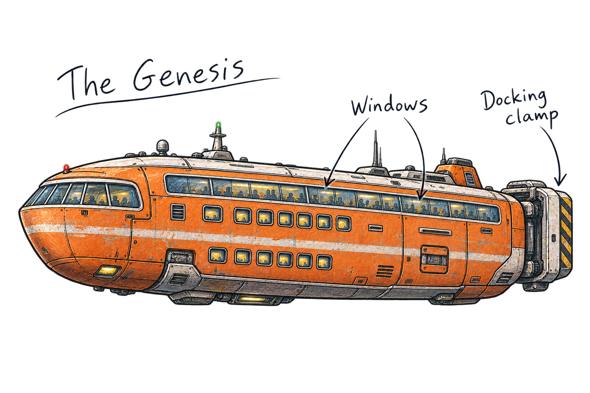
Eleven illustrations based on your sketches and character notes, with ink outlines, pencil shading, and handwritten details.
Tap any illustration to inspect the full-size PNG. These are new review drafts; the existing book illustrations and story text are unchanged.

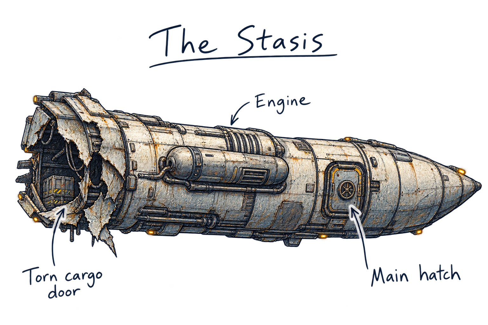
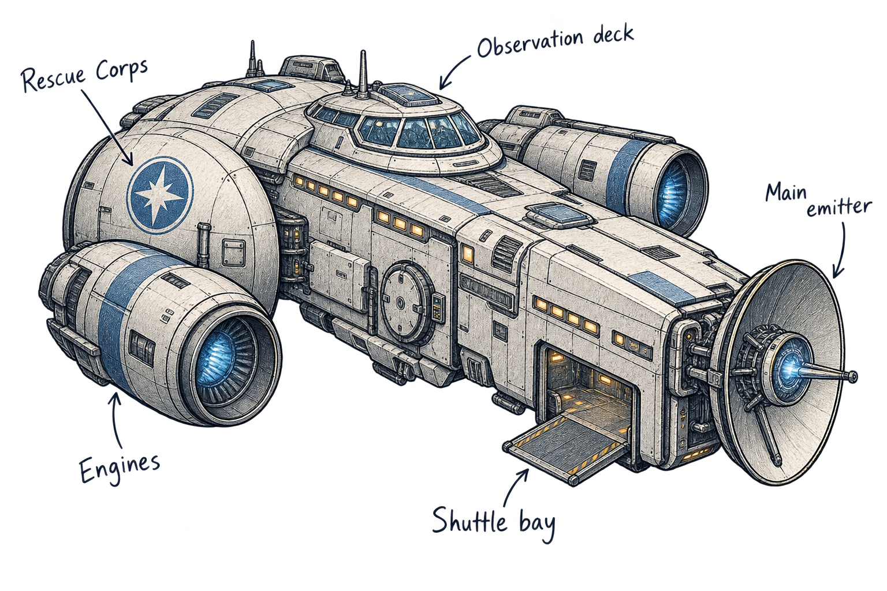
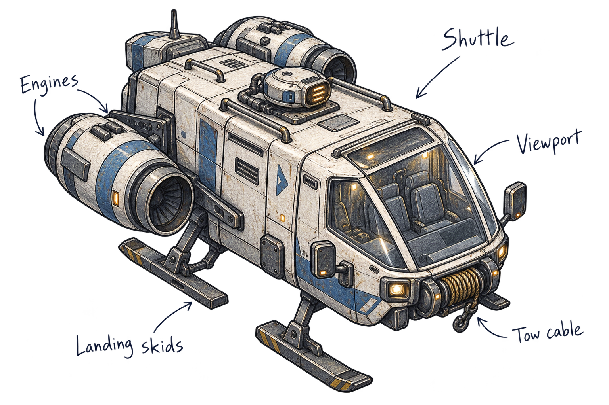
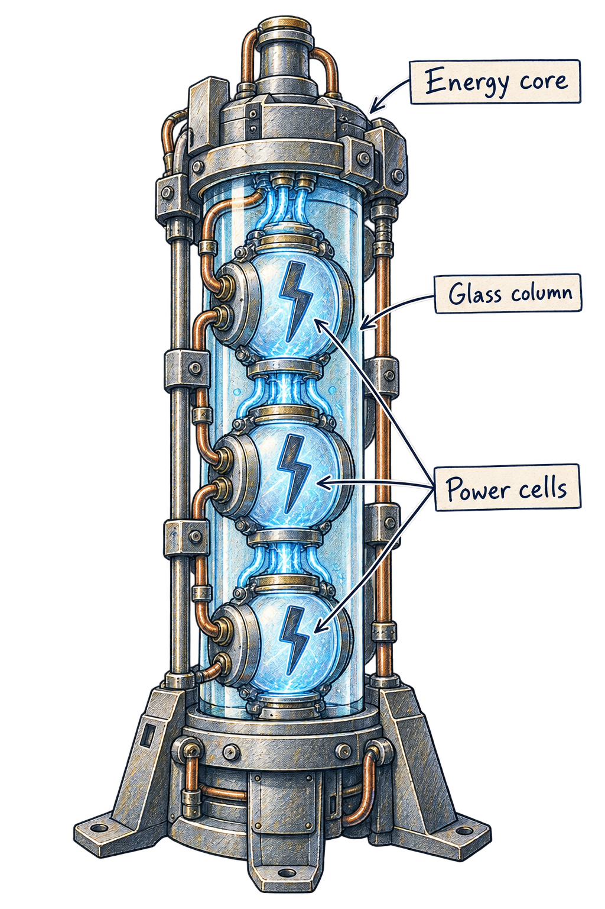
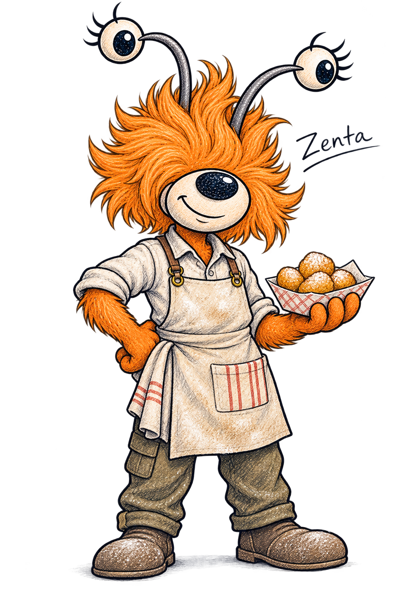
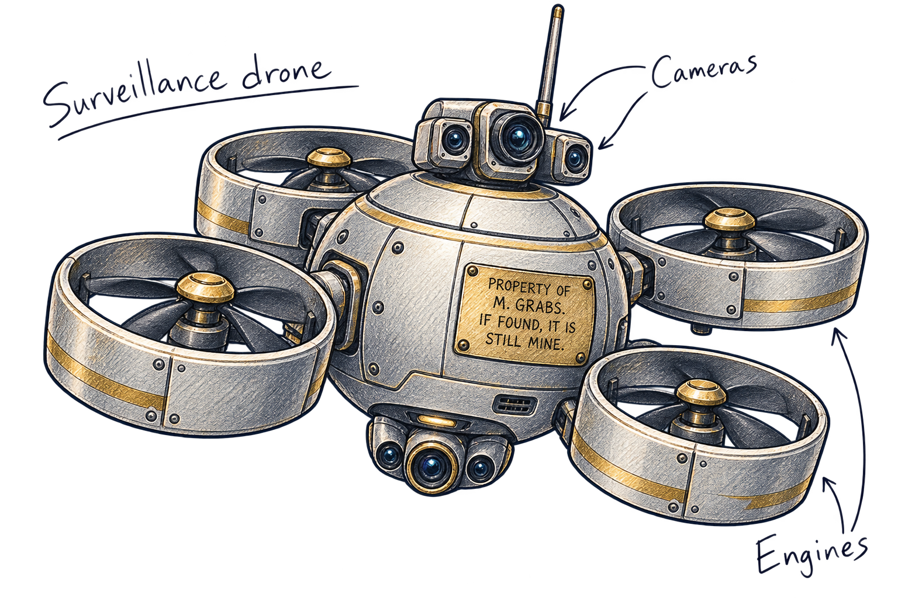
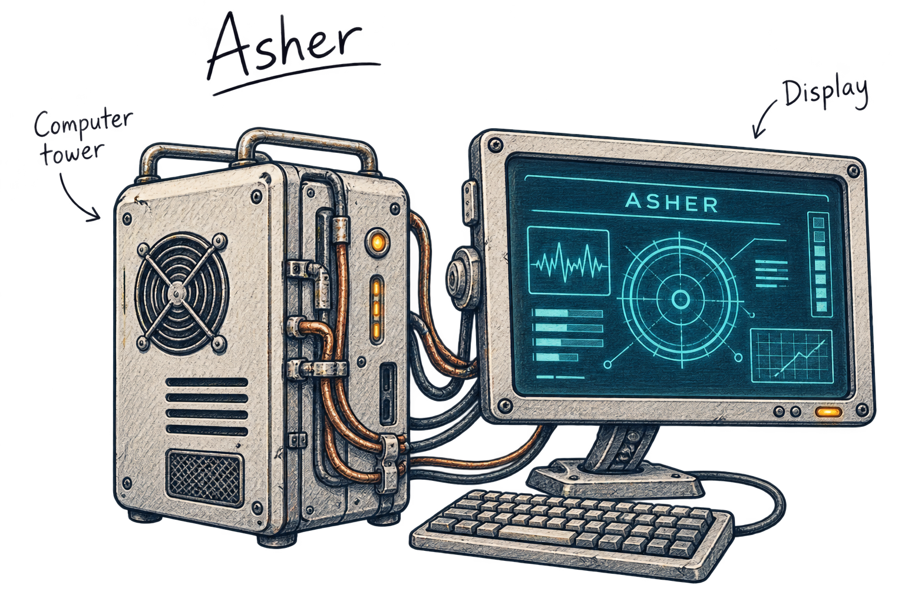
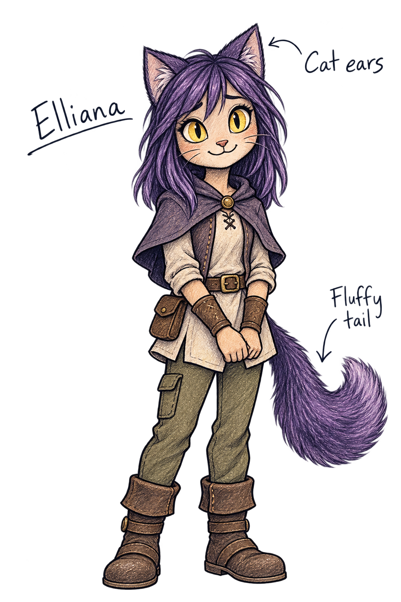
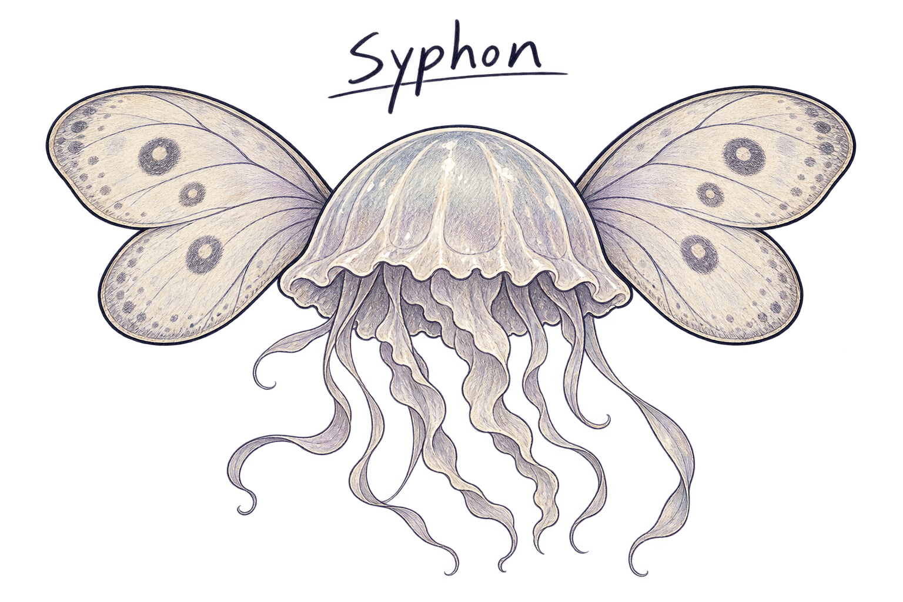
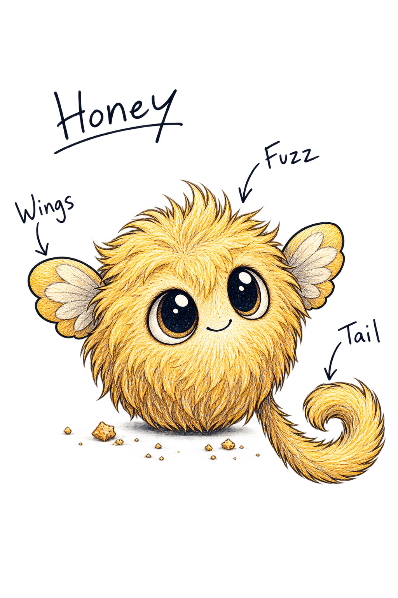